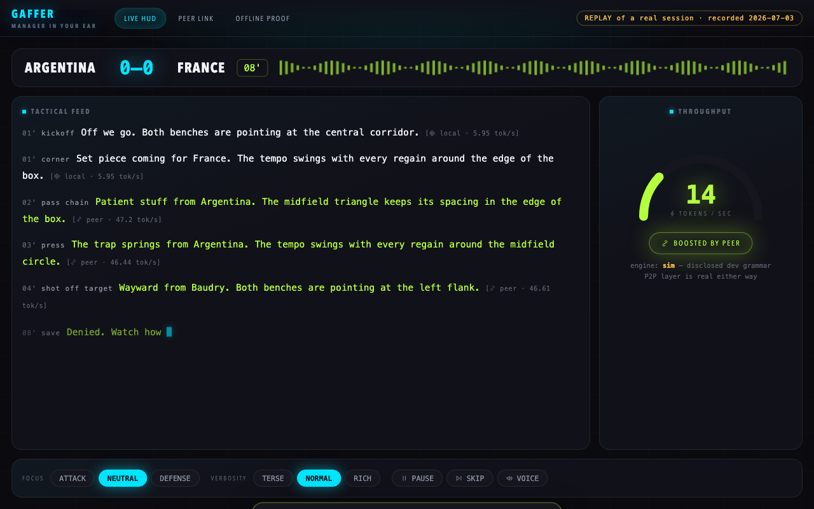
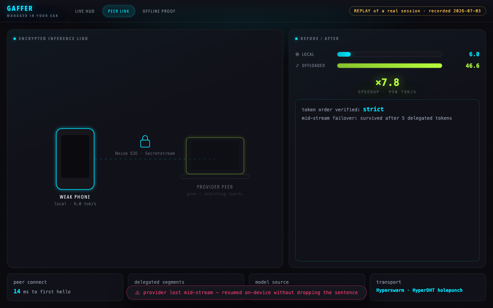
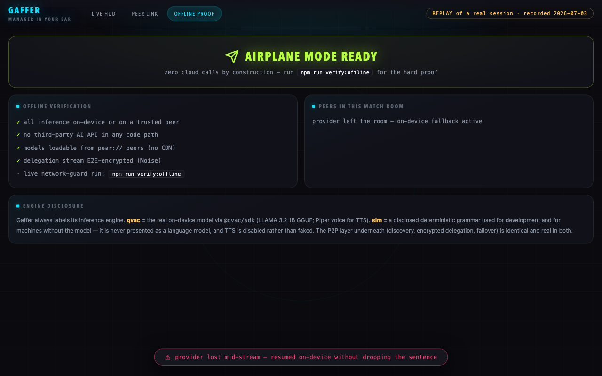

A pundit in your ear.
No cloud. No signal needed.
Not even your own compute.
Gaffer streams tactical football commentary from a language model running on your device via QVAC. And when your phone is too weak — in the away end, on a plane — it borrows a laptop peer's compute over an encrypted P2P link and keeps talking.

The offload is the product
One flow, extreme depth: join a match room → delegate inference to a trusted peer → stream commentary to the ear. Everything else got cut.
On-device commentary
A small LLM (LLAMA 3.2 1B GGUF) narrates every press, overlap and penalty token-by-token from a football system prompt. Focus it on attack or defense, throttle the verbosity, pause it — it's your personal feed.
Peer compute, encrypted
A laptop in the room announces itself as a provider on the match topic. Your phone's completion requests stream over a Noise-encrypted swarm socket — peers are keypairs, not IP addresses.
Mid-sentence failover
Kill the provider mid-stream and the sentence finishes on-device — token-exact with a deterministic engine. LOCAL → OFFLOADED → FALLBACK → recovered, every edge unit-tested.
Models from peers, not CDNs
The GGUF weights are seeded as a Hyperdrive and fetched over pear:// — a fresh phone gets a working brain from the fan sitting next to it. No match-day download.

Claims you can execute
Every number above is produced by a script in the repo, not typed into a README.
npm run benchlocal vs offloaded tokens/sec with p50/p95, first-token latency and peer-connect time. Reproducible: same seed, same segments.
npm run verify:offlinea process-wide network guard blocks every non-local connection, then runs the full commentary loop AND the full P2P offload on a loopback-only DHT. Any cloud call = loud failure.
npm run check:readyfails the build if unfinished copy survives anywhere or the README's stated test count doesn't match a live run.

Why only QVAC × Pear
They share the same Holepunch substrate — inference delegation over a swarm is native, not a bolt-on. Take them out and you'd need a cloud LLM, a cloud TTS, a model CDN, a signalling/TURN server and a rented GPU — plus a privacy policy asking fans to trust you.
QVAC
loadModel({modelSrc: pear://…}) · completion({stream:true}) → tokenStream · textToSpeech (Piper) · startQVACProvider({topic})
Pear
Hyperswarm match rooms · Noise Secretstream E2E · Hyperdrive model sharing · HyperDHT holepunching · Bare-ready
Honest limitations
- Cold-start model load is slow on first run — mitigated by pear:// pre-seeding, and documented rather than hidden.
- Commentary is generative narration of a match event feed — it is not a licensed live-data product.
- Without @qvac/sdk installed, a clearly-labelled deterministic sim engine drives development and demos; it is never presented as a model and TTS stays off rather than faking audio.
- Token-exact failover resume holds for deterministic engines; with a real LLM the segment restarts (flagged in the UI) — honesty over magic.
Run it in two terminals
No accounts. No API keys. Node ≥ 20.